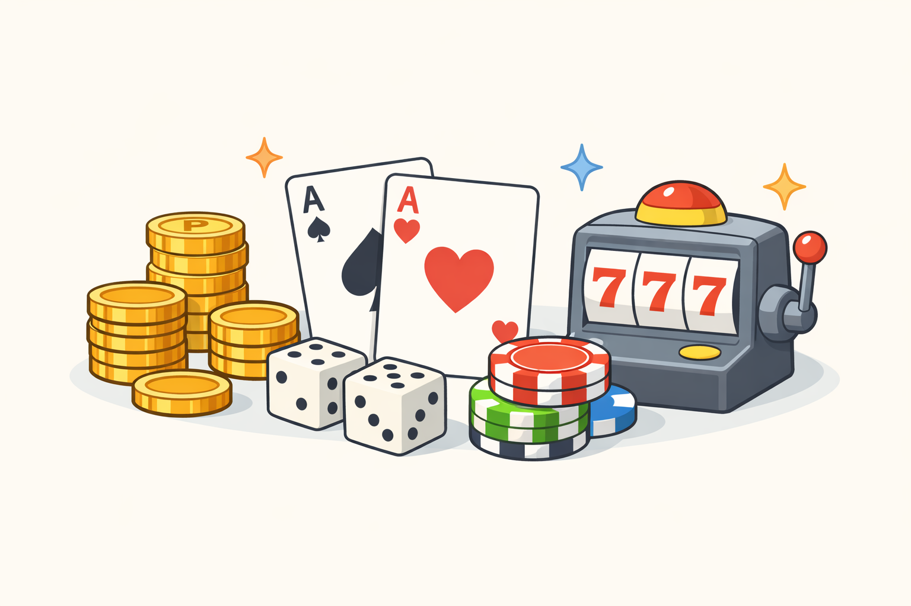
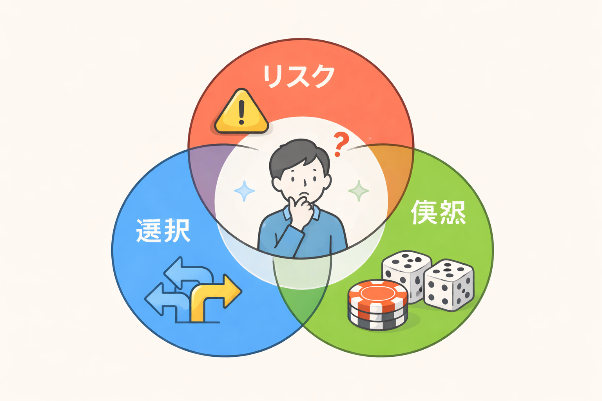

「ギャンブル」と聞いて、あなたは何を思い浮かべるでしょうか。
日本であれば競馬やパチンコ。海外であればカジノやスロットを思い浮かべる方も多いかもしれません。

実は「ギャンブル」と呼ばれる行為には、共通するいくつかの要素があるとされています。
私は「ギャンブル等依存症対策士」の資格取得の過程でこの定義を学び、本制作でもその考え方を基準の一つとしています。
ギャンブル・ギャンブル的行為には、以下の要素が必要とされている。
・自由な選択とリスクの受け入れ
・金品、またはそれに準ずる大切なものを賭けること
・結果に偶然性が関与すること
（勝敗が明確に確定するという公平性の原則を含む）
これらすべてを満たすものが、ギャンブル、あるいはギャンブル的行為として成立すると考えられています。
逆に言えば、私たちが意識していなくても、ギャンブル的要素を含んでいる行為が存在する可能性があります。
例えば、ソーシャルゲームのガチャや株式取引、年賀状の抽選なども、条件によってはギャンブル的行為と言えます。
そのためこのサイトでは、「公営ギャンブル等」という言葉を、該当する行為に置き換えても距離感を考えられるようにしています。

同じ行動でも、ある人にとっては息抜きや娯楽であり、別の人にとっては生活に影響を与えるものになることがあります。
それは意志の強さや弱さだけで決まるものではありません。
時間の使い方、金額、生活環境などによって、ギャンブルとの距離感は大きく変わります。
このサイトは、公営ギャンブル等を積極的に勧めるものでも、やめさせるためのものでもありません。
大切にしているのは、「自分にとって今の距離感はどうなのか」を考えることです。
診断や体験談を通して、その判断材料を提供することを目的としています。